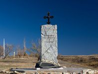
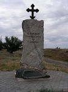
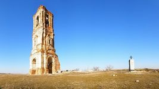

В память о знаменитом предке в станице Качалинская Иловлинского района Волгоградской области был открыт памятник «Ермаку Тимофеевичу со товарищи» – мраморная трехметровая глыба с кованым крестом наверху.

Памятник Ермаку
Описание
История
Ермака Тимофеевича не зря называют завоевателем Сибири. В XVI веке он широко раздвинул восточные пределы Российского государства. Известны его сражения с ордами хана Кучума, подвиги во время Ливонской войны, защита Москвы от крымского хана Девлет-Гирея. Но мало кто знает, что, перед тем, как начать поход на Урал, Ермак Тимофеевич избирался атаманом Качалинского городка (ныне — станица Качалинская Волгоградской области). Если верить некоторым преданиям, там он и родился, будучи донским казаком.
Фотографии
  
Расположение
 )
)
Расположение памятника Ермаку на интерактивной карте
Памятник Ермаку находится в Иловлинском районе Волгоградской области, в станице Качалинская.
Ориентиром служит поворот на Качалино (направо, если едите с московского направления).
После поворота нужно ехать все время по главной дороге, после того как проедите элеватор, нужно повернуть направо на первом
повороте на асфальтовую дорогу и проехать по ней около 1,2 километра.
Ориентиром может также служить разрушенная церковная колокольня, возле которой и находится памятник.